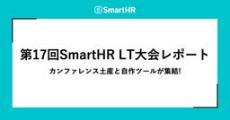
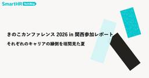
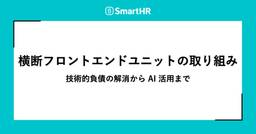

SmartHR Tech Blog
https://tech.smarthr.jp/
SmartHR 開発者ブログ
フィード

Innovative Crosstalk Jamboree Geeks’26に参加・登壇してきました！
SmartHR Tech Blog
こんにちは！SmartHRの業務連携基盤ユニットでプロダクトエンジニアをしているいとじゅんです！SmartHRの新卒1期生として2026年に入社しました。 先日8月2日に開催された「Innovative Crosstalk Jamboree Geeks’26」に参加して、30分セッションで登壇してきましたので、登壇のお話や聴講させていただいたセッションなどを紹介します！ 「Innovative Crosstalk Jamboree Geeks’26」とは このカンファレンスは、AI活用と異文化交流をテーマに掲げて開催されました。技術の共有だけでなく、エンタメや新しいテーマへの挑戦を重視している…
2日前

第17回SmartHR LT大会レポート ── カンファレンス土産と自作ツールが集結！
SmartHR Tech Blog
こんにちは。SmartHRで給与計算機能を開発している nobu です。 この記事では、2026年6月19日に開催した第17回SmartHR LT大会の模様を、NGTさん・mashi6nさんと共にお届けします。 目次 目次 SmartHR LT大会とは 参加者情報 発表レポート ドメエキの話をちゃんと聞こう！（qwyng さん） bloghrの“真実”（osyoyu さん） TSKaigi 2026 にいってきたよ（kazuemon さん） Google Slideをやめたい（nori さん） RubyistがLaravel Live Japan行ってきましたレポ（mktakuya さん） は…
3日前

SmartHR最大のRailsアプリケーションにコネクションプーラーを導入しました！── 2年前の障害対応から学んだスケーラビリティと運用のリアル 33
33
SmartHR Tech Blog
こんにちは。スケーラビリティエンジニアリングユニットの @kawaida です。 最近、トークンマキシングならぬポケモンマキシングをして、ぽこあポケモンの図鑑コンプしました。（時が過ぎるのははやい） ２年前には「基本機能」と呼ばれる SmartHR 最大の Rails アプリケーションに、コネクションプーラーを導入しました。 この記事では、導入にあたって検討した技術的な背景や選定理由をご紹介します。 背景 SmartHR の「基本機能」では Cloud Run を使用しており、リクエスト数や負荷の増加によってオートスケールします。 サービスの成長に伴ってトラフィックが増えると、スケールアウトし…
5日前

SmartHRの信頼性を支える —— 人事マスタエリアのQAエンジニアが今取り組んでいること 1
SmartHR Tech Blog
こんにちは。SmartHR品質保証本部、人事マスタユニットのkanna、kaomiです。 2026年3月に公開した「SmartHRの人事マスタを守る —— QAエンジニアとして挑む、品質保証の現場」では、人事マスタユニットが抱える品質保証の課題と、それに向き合うために始めた取り組みを紹介しました。 前回の記事から数か月が経ち、私たちは開発チームとともに、品質リスクを開発の早い段階で見つけ、継続的に改善する仕組みづくりを進めています。この記事では、前回お伝えした取り組みの続編として、人事マスタエリアで求められる品質保証と、QAエンジニアが現在どのように「信頼性」を支えているかを紹介します。 人事…
5日前

きのこカンファレンス 2026 in 関西参加レポート —— それぞれのキャリアの縁側を垣間見た夏 1
SmartHR Tech Blog
こんにちは、プロダクト基盤開発部のR&Dユニットでプロダクトエンジニアをしているydahです。 2026年8月1日（土）に大阪のBlooming Campで開催された「きのこカンファレンス 2026 in 関西」に参加し、「わからない話を追いかけたら、プログラミング言語を作る側にいた」というタイトルで登壇しました。 luccafort.connpass.com この記事では、きのこカンファレンス 2026 in 関西の雰囲気と、発表した内容、参加して感じたことを書きます。 きのこカンファレンス 2026 in 関西の会場となったBlooming Campのエントランスエリア きのこカンファレン…
5日前

横断フロントエンドユニットの取り組み —— 技術的負債の解消から AI 活用まで 1
SmartHR Tech Blog
こんにちは、SmartHR でプロダクトエンジニアをしている negiandleek と sakata です。 私たちは横断フロントエンドユニットに所属し、SmartHR 基本機能のフロントエンドに関する課題解決に取り組んでいます。 本記事では、横断フロントエンドユニットが組成された経緯とこれまでの取り組み、そして将来的な展望を紹介します。 横断フロントエンドユニットが組成された経緯 SmartHR の基本機能は、従業員情報の管理を担う基盤となるプロダクトで、歴史が古く大きなものです。 そのため、以下のような課題を抱えていました。 全体的にモジュールバージョンが古く、更新されていないため、セキ…
6日前

SmartHR全体のAI開発を加速する —— これからのAI開発部が担う3つの役割
SmartHR Tech Blog
はじめに こんにちは！技術統括本部AI開発部でEMをしているbiwakoです。2026年4月に入社し、4ヶ月が経過しました。 入社前はSmartHRに馴染めるか不安でいっぱいでしたが、素晴らしいカルチャー・同僚のおかげで「まだ4ヶ月か」と思うほど濃い時間を楽しめています。 AI開発部では現在、AI開発を一部の専門チームに閉じず、各プロダクトチームが安全かつ迅速に実践できる体制作りを進めています。 この記事では、AI開発部が目指す体制と、これから入社する方が挑戦できることをご紹介します。 なお、この記事での「AI開発」とは、AI機能やAIプロダクトの開発を指します。注釈がない限りは「Coding…
9日前
関西Ruby会議09レポート —— 前夜祭、本編、Official Party
SmartHR Tech Blog
SmartHRは、2026年7月18日に滋賀県・大津市伝統芸能会館で開催された関西Ruby会議09にSilver Sponsorとして協賛し、13名が参加、2名が登壇、1名が運営に携わりました。 この記事では、前後イベントも含め、その模様をmottyとudzuraで手分けしてお届けします！ 会場の大津市伝統芸能会館 前夜祭 関西Ruby会議09では、前夜祭は2箇所で開催され、好きな方に参加可能な形でした。 kyotorb.connpass.com kyobashirb.connpass.com udzuraは日本酒に釣られて下田屋さんで開催された前夜祭に参加しました。滋賀は日本酒が本当に有名で…
10日前
AIで実装速度が倍になったら、プランニングとリファインメントが悲鳴をあげた
SmartHR Tech Blog
こんにちは！ SmartHRでプロダクトエンジニアをしている wakasa です。 最近はAIを使った開発が盛んになり、私が所属する「グループ企業管理」というチームでも、Claude Codeを使った開発が中心になっています。 この記事では、開発のAI活用を進めていたら、（スプリント）プランニングと（バックログ）リファインメントが大変なことになって、それを改善した取り組みを話したいと思います。 AI活用が進む前の開発 グループ企業管理チームでは、1週間を1スプリントとするスクラムを採用しています。 チームは4人で、AI活用が進む前のチケット消化量は、チケットに割り当てたストーリーポイントにもよ…
10日前
ディスカバリーリードに挑戦して学んだこと 〜プロダクトエンジニアが上流工程を主導するまで〜
SmartHR Tech Blog
こんにちは！SmartHRでプロダクトエンジニアをしているAtsuです。2025年9月に入社し、それから約半年間は開発メンバーとしてプロダクト開発に携わってきました。 そんな中、あるプロジェクトをきっかけに、ディスカバリー（何を作るかの検討）からソリューションレビュー（解決策の妥当性を評価しGo/No-Goを判断する意思決定ゲート）までを主導する「ディスカバリーリード」という役割を初めて担当することになりました。これまでプロダクトエンジニアは、仕様がある程度固まった後のフィーチャーリードを担うことが多かったのですが、この取り組みではより上流からプロダクトづくりに関わることになります。 結果とし…
12日前
開発チームにノウハウが残るSREの関わり方 —— 年末調整のピークに備えた負荷試験
SmartHR Tech Blog
こんにちは！SmartHRでSREをしております樋口と申します。 本記事では、2026年上期のSRE活動の一環として、年末調整チームと共同で実施した負荷試験の取り組みを紹介します。 具体的には「負荷試験のノウハウをいかに開発チームへ定着させたか」という組織的・プロセス的なアプローチにフォーカスしてお伝えします。 前提：年末調整チームとSREチームの状況 今回の活動の背景として、それぞれのチームが抱えていた状況をお話しします。 年末調整チームの課題 年末調整というドメインの特性上、9〜11月にトラフィックのピークを迎える一方で、それ以外の時期はアクセスがほとんどありません。そのため、「平常時のト…
16日前
CRE Camp #6 参加レポート —— アンカンファレンスがイベントの "顔" になってきた！
SmartHR Tech Blog
こんにちは！ CRE（Customer Reliability Engineering）部の a-know こと井上です。毎日暑いですね。私事ですが、これまでのチーフという役割に加えて、7月からCRE部のマネージャーも務めることになりました。暑さに負けず、頑張っていきたいと思っています！ さて、去る7月17日（金）に株式会社アシュアードさんのオフィスを会場としてお借りして、CRE Camp #6が開催されました！ cre-camp.connpass.com 会場入口に用意していただいていた立て看板 今回も、私は CRE Camp のコアメンバーとして運営・参加をしてきましたので、今日はその開催…
16日前
プロダクトエンジニアのAI機能開発の取り組み
SmartHR Tech Blog
こんにちは！SmartHRのAI開発部のAIインテグレーションユニットで、プロダクトエンジニアをしているkakifryです。2025年7月に入社し、ちょうど1年が経ちました。 前職では求人サイトのレコメンド領域でAPI開発に携わっていました。AIに関わる仕事ではあったものの、AIをプロダクトとして届ける上流から関わりたいという気持ちがあり、AI専任チームへの入社を決めました。 1年過ごしてみて感じているのは、研究開発に留まらず、製品への適用からスケールまで一気通貫で携われる点が、このチームの面白さだということです。PoC（概念実証）を作って終わりではなく、それをユーザーが実際に使えるプロダクト…
18日前
SRE NEXT 2026レポート —— 協賛、参加、登壇
SmartHR Tech Blog
こんにちは！SmartHRのSREをしてます中間（@kekke_n）です！ SmartHRは2026年7月10日（金）・11日（土）にTOC有明で開催された「SRE NEXT 2026」に参加してきました！また、ランチスポンサーセッションでは私、中間が登壇しました！ この記事では、イベントの模様と登壇内容についてレポートします。 SmartHR参加メンバーの集合写真 SRE NEXT 2026とは SRE NEXTは、信頼性に関するプラクティスに関心を持つエンジニアのためのカンファレンスです。 2026年のテーマは「Inclusive SRE」で、経験豊富な SRE（Site Reliabil…
22日前
半期をふりかえり、来期を考える「QA Summit」を開催しました
SmartHR Tech Blog
こんにちは、SmartHR 品質保証本部 Directorのtarappoです。 品質保証本部では半期*1に1度「QA Summit」という会を開催しています。 先日、FY26上半期のQA Summitを開催しました。 本記事では、発表内容の詳細については社内情報を含むため紹介できませんが、QA Summitをどういった目的で、どのように開催しているのかを紹介します。 QA Summitとは QA Summitとは、品質保証本部に所属するQAEのメンバー全員が集まって、半期のふりかえりと来期なにをやるかを共有する場です。 リモートワークがメインな働き方をしているなかで、同じ専門性を持つメンバー…
22日前
「TSKaigi 2026事後勉強会」を開催しました
SmartHR Tech Blog
こんにちは！ SmartHRでプロダクトエンジニアをしている tokky です。 この記事では、先日開催した「TSKaigi 2026事後勉強会」の様子をお届けします。 TSKaigi 2026事後勉強会アイキャッチ 目次 目次 開催概要 オープニング TSKaigiへの参加が初めてだった方のLT Vite+を爆速で社内デザインシステムに導入してみた なぜ型を書くのか？ TSKaigi2026で改めて考える 共通化で考えるべきは、実装より公開する型だった TSKaigiへの参加が2回目以上だった方のLT a11yのルール違反をコンパイルタイムで明確にしてみた話〜LSP〜 UIパーツの設計を「型…
24日前
Engineering Manager Meetup #19 〜 エンジニア組織とお金のお話しレポート
SmartHR Tech Blog
こんにちは。SmartHRでタレントマネジメント領域のEngineering Managerをしている @tweeeety です。少し時間が経ってしまいましたが、2026年1月30日にSmartHRのイベントスペースにて「Engineering Manager Meetup #19〜エンジニア組織とお金のお話し」というイベントを開催しました。 この記事では、イベントの様子をレポートします。 Engineering Manager Meetupとは Engineering Manager Meetupは、エンジニアリングマネージャーをテーマに、さまざまなトピックについて語り合うイベントです。 e…
24日前
「面倒」を聞き逃さない —— ESLintでチーム間の課題を解決してみた
SmartHR Tech Blog
こんにちは。フロントエンドエンジニアのatsushimです。 過去に書いたブログ記事を読み直してみたら、大体ESLintの話をしていました。 「アクセシビリティを担保するためにESLintの独自ルールを作っている話」 「弊社のheading levelがめちゃくちゃだった件と 解決のためにしたことの話」 「スプレッド構文と残余引数の安全な使い方 —— ESLintによる品質管理」 今回もESLintの話ですが、ちょっと方向性を変えて、エンジニア以外のチームとの連携のためにルールを作った話をしたいと思います。 今回は2つの事例を紹介します。 1つはInternationalization（多言語…
25日前
現役QAエンジニア×Directorインタビュー ── SmartHRが、初めて新卒QAエンジニア採用を始める理由
SmartHR Tech Blog
こんにちは！エンジニアの新卒採用人事をしているikuraと申します。 「エンジニア＝コードをバリバリ書く人」。そんなイメージを持っている方も多いかもしれません。でもSmartHRには、「コードを書くことだけがエンジニアじゃない」という選択肢があります。開発全体に関わりながら、プロダクトの価値とユーザー体験を支える──それがQAエンジニアという職種です。 そんなQAエンジニアを、SmartHRは2028年卒採用に向けて2026年から募集開始します。今回はその第一歩として、QAエンジニアとして活躍するhigashi173さんと、品質保証本部のDirectorを務めるtarappoさんにインタビュー…
25日前
SmartHRは関西Ruby会議09に協賛し、2名が登壇します
SmartHR Tech Blog
こんにちは、SmartHRのydahです。 SmartHRは、2026年7月18日（土）に大津市伝統芸能会館で開催される「関西Ruby会議09」にSilver Sponsorとして協賛します。 regional.rubykaigi.org 関西Ruby会議は、関西で定期的に開催されている、プログラミング言語Rubyに関する技術カンファレンスです。関西圏を中心にRubyistが集まり、Rubyに関する技術講演を聞いたり、Rubyist同士が知見を共有したりする場として開催されています。 今回の関西Ruby会議09には、SmartHRからnoriとkinoppydの2名が登壇します。また、ydah…
1ヶ月前
関西Ruby会議09 チーフオーガナイザーの ydah さんにタイムテーブルを解説してもらいました
SmartHR Tech Blog
こんにちは、SmartHR の inao です。 RubyKaigi 2026 の余韻が残るなか、地域Ruby会議のひとつである 関西Ruby会議09 の開催が近づいてきました。 関西Ruby会議09 は、2026年7月18日（土）に滋賀県の大津市伝統芸能会館で開催されます。基調講演は 成瀬ゆいさんとはすじょいさんのお二人です。 regional.rubykaigi.org SmartHR は今回、Silver スポンサーとして本カンファレンスに協賛しています。また、社内から2名のメンバーが登壇する予定です。 本記事では、関西Ruby会議09 のチーフオーガナイザーである SmartHR の …
1ヶ月前
AI 乗り遅れチーフが、AI ドリブン開発を2か月でチームに定着させ、開発生産性を +68.9% まで引き上げた話
SmartHR Tech Blog
こんにちは、masaru です。 私は現在 SmartHR でタレントマネジメント領域のプロダクト開発チームのチーフを務めています。チームはプロダクトマネージャー（PdM）1名、プロダクトエンジニア（PdE）3名（私含む）、デザイナーをはじめとするスペシャリスト数名で構成されています。私自身は PdE として実装に携わりつつ、プロジェクトマネジメントや、PdE 2名のピープルマネジメントを担当しています。 なお、本記事で頻出する「チーフ」という言葉について補足します。SmartHR における「チーフ」とは、3〜5人程度の開発チームを束ねるマネジメントロールを指します。エンジニアリングマネージャ…
1ヶ月前
ActiveRecordの複製処理を簡潔に書くgemを作った
SmartHR Tech Blog
こんにちは、SmartHRでDPE（Developer Productivity Engineer）をしている@alpaca-tcです。 今回は、複製機能をシンプルに実装するために作成したactiverecord-duplicatorというgemについて紹介します。 複製機能とは 複製機能は、SaaS型プロダクトで一般的に見かける機能です。ユーザーが既存のレコード（テンプレートなど）をコピーして、同じ内容の新しいレコードを作成する機能のことです。 ユーザーが見る複製機能のUI 複製機能は複数のレコードと関連が絡み合うため、実装が複雑になりやすい特性があります。 ActiveRecordを使った…
1ヶ月前
内定者インターンがUIライブラリを20バージョン分アップデートするまで
SmartHR Tech Blog
こんにちは！SmartHR で内定者インターンをしているna2keraです。 私が携わるプロダクトで、UIライブラリSmartHR UIの大幅アップデートに挑戦しました。この記事では、1ヶ月半・13本の PR を経て、バージョンを v75.4.1 から v96 まで一気に引き上げた取り組みと、そこで得た知見を紹介します。 1行の CSS を書こうとしたら、20バージョンの遅れが判明した きっかけは、ある画面のレイアウト修正でした。大きい画面でコンテンツの横幅を制限しようとしたとき、SmartHR UI の最新版には対応用のコンポーネントが用意されているはずでしたが、プロダクトで使用しているバー…
1ヶ月前
「エンジニアのキャリアを知るナイト」に登壇してきました
SmartHR Tech Blog
こんにちは、SmartHRでプロダクトエンジニア（PdE：Product Engineer）をしている、16bit_idolです。最近（4月に）バイクの免許を取得し、休日の移動が楽しくなりました。 この記事は、2026年6月10日に開催された「エンジニアのキャリアを知るナイト」というイベントのレポートです。3名の登壇者のうちの1人として参加してきたので、当日の内容を紹介します。 bashowotsukuru.connpass.com 「エンジニアのキャリアを知るナイト」とは このイベントは、マネジメントやスペシャリスト以外の多様なエンジニアキャリアを紹介することを目的に開催されました。「エンジ…
1ヶ月前
外部サービス連携基盤 —— クレデンシャル管理基盤への第一歩
SmartHR Tech Blog
近年の SaaS 業界では、マルチプロダクト戦略をとる企業が一層増えています。複数のプロダクトを束ねて提供することは大きなシナジーを生みますが、その価値を引き出すには、プロダクト同士がデータを安全にやり取りできること——すなわち連携の土台となる認証の仕組みが欠かせません。 SmartHR でも、社内プロダクト同士の連携に加えて、社外サービスとの連携も少しずつ広がり、その下地が整いつつあります。一方で、システム間の認証方式は多岐にわたります。外部サービス側の制約、社内のセキュリティ要件、技術的な事情などを踏まえると、Basic 認証・API キー・OAuth 2.0 といった複数の方式を個別に作…
1ヶ月前
プロダクトエンジニアによるSLO運用改善 —— 半年間の取り組みと学び
SmartHR Tech Blog
こんにちは！プロダクトエンジニアの mktakuya です。ポータル開発Aユニットでホーム画面やお知らせ機能の開発を担当しています。 2026年からチームのSLO（Service Level Objective：サービスレベル目標）の運用改善を担当しています。この半年間で、SLOの対象エンドポイントのパフォーマンス改善、しきい値の見直し、新規SLOの追加や運用の仕組み化に取り組みました。 その過程で、信頼性改善はSRE（Site Reliability Engineering）を扱う専門チーム（SREチーム）だけのものではなく、私たちのようなフィーチャーチームのプロダクトエンジニアも日々の開発…
1ヶ月前
"きのこカンファレンス2026" にランチスポンサーとして協賛しました！ —— 参加・登壇レポート
SmartHR Tech Blog
去る6月28日（日）、場所はお台場・日本科学未来館にて、「エンジニアがこの先生きのこるためのカンファレンス 2026」（通称 "きのこカンファレンス2026"）が開催されました。このカンファレンスは、参加される方がそれぞれのキャリアやロードマップを見つめ直し、自身の未来を描くヒントを得ることを目的に開催される、今年が第2回開催となるITカンファレンスです。 今回、我らが 16bit_idol さんのプロポーザルが採択され、また SmartHR としても協賛・スポンサーセッションとして登壇もしてきましたので、今日はその開催・登壇レポートを、16bit_idol・a-know の両名がお送りします…
1ヶ月前
SmartHR は SRE NEXT 2026 にランチスポンサーとして協賛します
SmartHR Tech Blog
2026年7月10日（金）・11日（土）に TOC有明で開催される「SRE NEXT 2026」に SmartHR がランチスポンサーとして協賛します！ また、ランチスポンサーセッションに中間啓介が登壇します。 SRE NEXT 2026とは SRE NEXT は、信頼性に関するプラクティスに関心を持つエンジニアのためのカンファレンスです。 2026年のテーマは「Inclusive SRE」で、経験豊富な SRE（Site Reliability Engineer：サイト信頼性エンジニア）だけでなく、エンジニアリングマネージャーやプロジェクトマネージャー、これから SRE に取り組み始めるチー…
1ヶ月前
RubyKaigi 2026にSmartHRから3名が登壇しました
SmartHR Tech Blog
こんにちは、SmartHRの @ydah、@osyoyu、@udzura です。 2026年4月22日（水）から24日（金）まで、北海道・函館で開催されたRubyKaigi 2026に、SmartHRから3名が登壇しました！ この記事では、登壇した3名それぞれから、セッションの紹介と登壇してみての感想をお届けします。 RubyKaigi 2026とは RubyKaigi 2026は、2026年に北海道・函館で開催された、Ruby言語に関する国際カンファレンスです。 rubykaigi.org Ruby言語のコア実装や周辺技術にフォーカスした発表が集まり、Rubyistにとって年に一度の大きなイ…
1ヶ月前